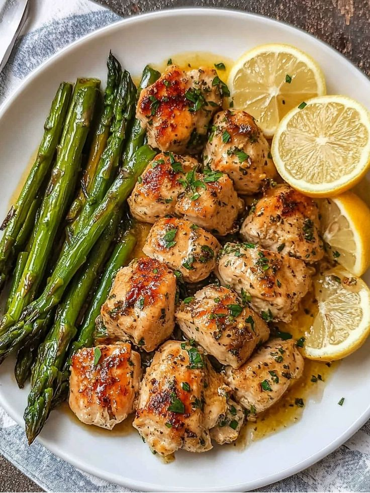
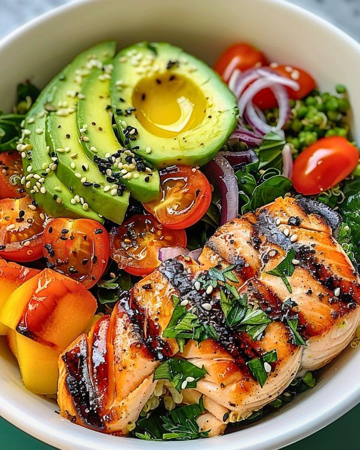
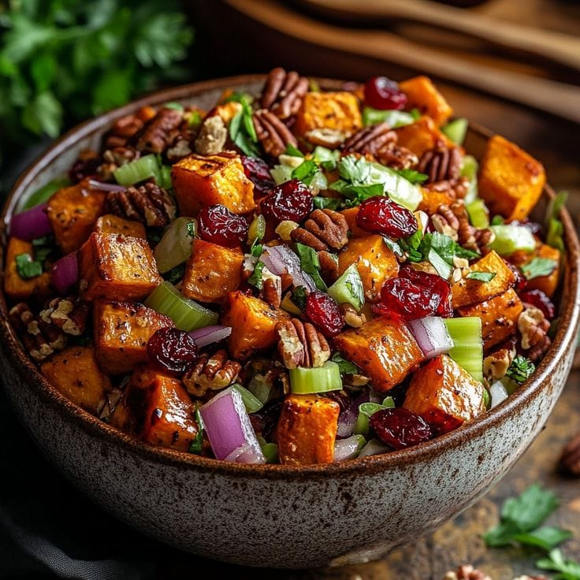
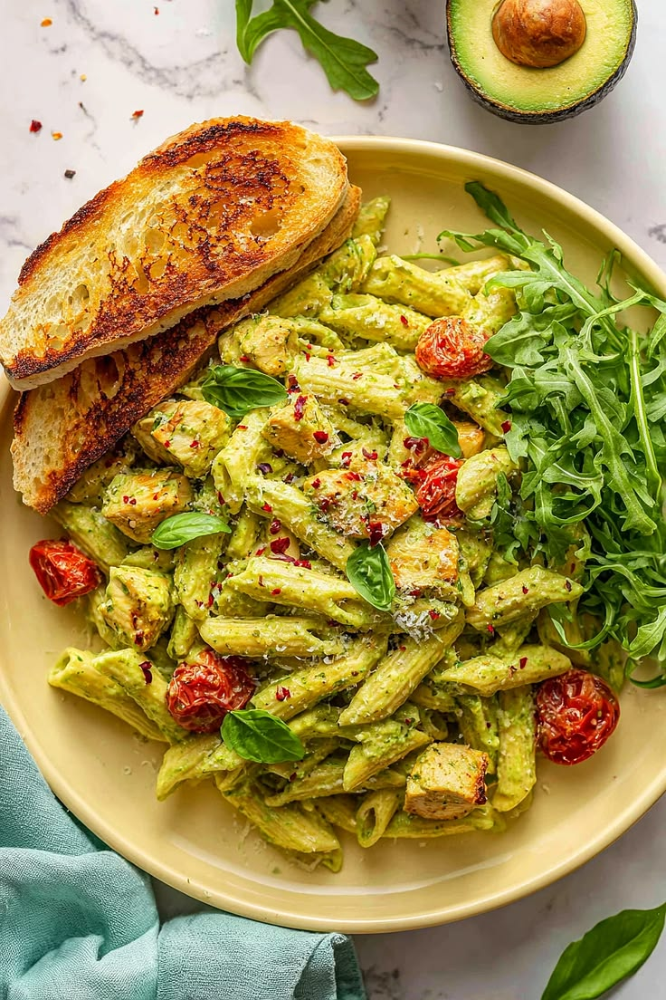
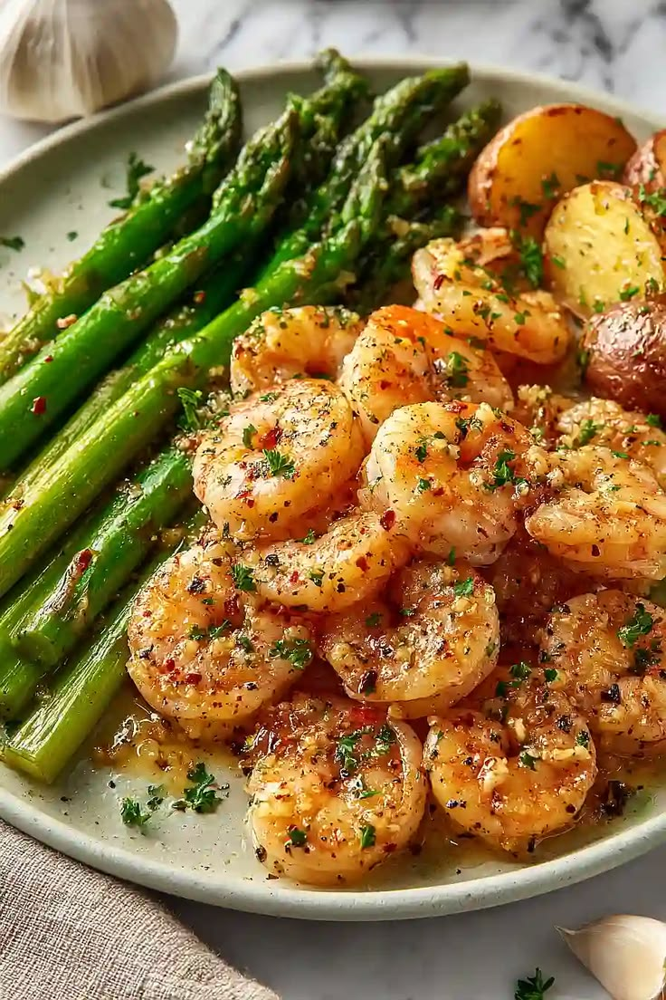
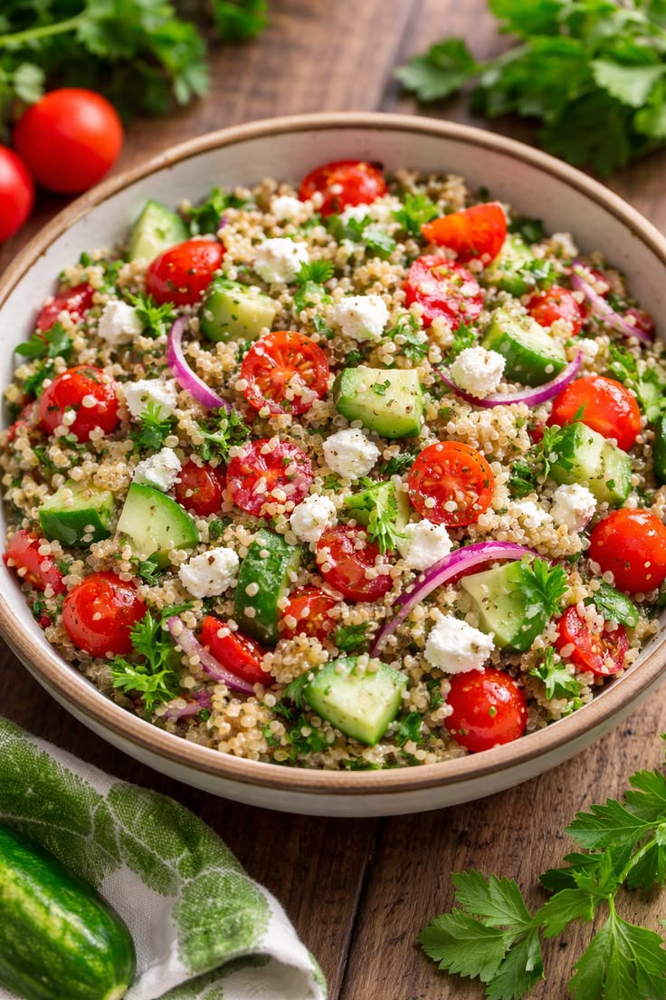

Lemon Herb Roasted Chicken

-
Ingredients:
- Skinless chicken breasts or thighs.
- 2 tbsp Olive oil, 3 cloves of minced garlic, and fresh lemon juice
- Fresh Rosemary and Thyme.
- Mixed vegetables (Broccoli, carrots, and baby potatoes).
-
Instructions:
- Marinate the chicken with garlic, lemon, olive oil, and herbs for 20 minutes.
- Place the chicken and chopped vegetables on a baking tray.
- Roast in a preheated oven at 200°C for 30-35 minutes until golden brown.
-
Macros:
- Calories: 350 kcal
- Protein: 42g
- Carbs: 12g
- Fats: 14g
Grilled Salmon & Quinoa Power Bowl

-
Ingredients:
- Fresh Salmon fillet.
- 1/2 cup cooked Quinoa
- Sliced Avocado and cherry tomatoes.
- Dressing: Honey mustard and a splash of apple cider vinegar.
-
Instructions:
- Season the salmon with salt and pepper, then grill for 4-5 minutes per side.
- Boil quinoa in water (1:2 ratio) until fluffy
- Assemble the bowl starting with quinoa, then add the grilled salmon, avocado, and drizzle with dressing
-
Macros:
- Calories: 520 kcal
- Protein: 34g
- Carbs: 45g
- Fats: 22g (Healthy Omega-3 fats)
Roasted Sweet Potato & Chickpea Salad

-
Ingredients:
- 1 can of Chickpeas (rinsed and drained).
- 2 medium Sweet potatoes (cubed).
- Fresh Baby spinach or Arugula.
- Tahini dressing (Tahini, lemon juice, and a pinch of cumin).
-
Instructions:
- Toss sweet potato cubes in olive oil and roast at 200°C for 20 minutes.
- In a large bowl, mix the roasted potatoes with chickpeas and spinach.
- Pour the creamy tahini dressing over the salad and toss well before serving.
-
Macros
- Calories: 380 kcal
- Protein: 12g
- Carbs: 58g
- Fats: 10g
Creamy Avocado Pasta (Vegetarian)

-
Ingredients:
- Whole wheat or gluten-free Spaghetti.
- 1 Ripe Avocado, fresh basil leaves, and 2 cloves of garlic.
- Cherry tomatoes (for topping).
- Lemon juice and a splash of pasta water.
-
Instructions:
- Boil the pasta according to package instructions.
- Blend the avocado, basil, garlic, and lemon juice until smooth.
- Toss the pasta with the avocado sauce and top with fresh cherry tomatoes.
-
Macros:
- Calories: 410 kcal
- Protein: 11g
- Carbs: 52g
- Fats: 18g (Healthy Omega-3 fats)
Garlic Butter Shrimp with Asparagus

-
Ingredients:
- Large Shrimp (peeled and deveined).
- A bunch of fresh Asparagus.
- 1 tbsp Butter (or Ghee), lemon zest, and red pepper flakes.
- Fresh parsley.
-
Instructions:
- Sauté asparagus in a pan with a bit of butter until tender.
- Add the shrimp and garlic, cooking for 2-3 minutes per side.
- Finish with lemon zest and chopped parsley.
-
Macros:
- Calories: 280 kcal
- Protein: 36g
- Carbs: 8g
- Fats: 12g (Healthy Omega-3 fats)
Mediterranean Quinoa Salad with Feta

-
Ingredients:
- Cooked Quinoa.
- Cucumber, red onion, and kalamata olives.
- Low-fat Feta cheese.
- Dressing: Red wine vinegar and dried oregano.
-
Instructions:
- Chop all vegetables into small cubes.
- In a large bowl, combine quinoa, vegetables, olives, and crumbled feta.
- Whisk the dressing ingredients and pour over the salad.
-
Macros:
- Calories: 320 kcal
- Protein: 14g
- Carbs: 38g
- Fats: 13g (Healthy Omega-3 fats)